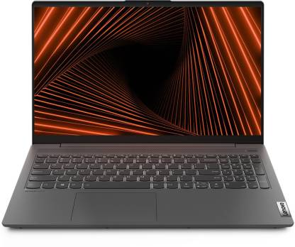
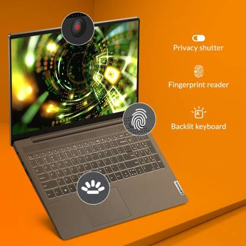
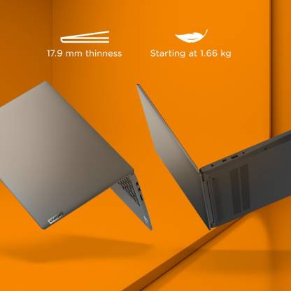

Lenovo Ideapad Slim 5i Core i5 11th Gen - (16 GB/512 GB SSD/Windows 10 Home)



₹65,000/-
Extra ₹3500/- off
HIGHLIGHTS
- Finger Print Sensor for Faster System Access
15.6 inch Full HD LED Backlit Anti-glare Display (16:9 Aspect Ratio, 45% NTSC Color Gamut, 300 nits Brightness, 80% Screen-to-body Ratio)
Pre-installed Genuine Windows 10 OS
Preloaded with MS Office
Light Laptop without Optical Disk Drive
SPECIFICATION
- Processor Brand:
Intel
Processor Name:
Core i5
Processor Generation:
11th Gen
SSD:
Yes
SSD Capacity:
512 GB
RAM:
16 GB
RAM Type:
DDR4
Processor Variant:
1135G7
Chipset:
Intel SoC Platform
Clock Speed:
2.4 GHz with Turbo Boost upto 4.2 GHz
Memory Slots:
NA
RAM Frequency:
3200 MHz
Cache:
8
Graphic Processor:
Intel Integrated Iris Xe
Number of Cores:
4
OS Architecture:
64 bit
Operating System:
Windows 10 Home
System Architecture:
64
Port And Slot Features:
Mic In:
Yes
USB Port:
1x USB 2.0 Type-A, 2x USB 3.2 (Gen 1) Type-A, 1x Type C USB 3.2 (Gen 2) with Display Port and G-Sync
HDMI Port:
1x HDMI (v2.0b)
Hardware Interface:
PCIe NVMe M.2
Warranty:-
1 Year Onsite Warranty
Warranty Service Type:
Covered in Warranty
Manufacturing Defects
Physical Damage
Domestic Warranty
1 Year